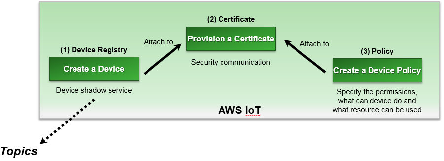
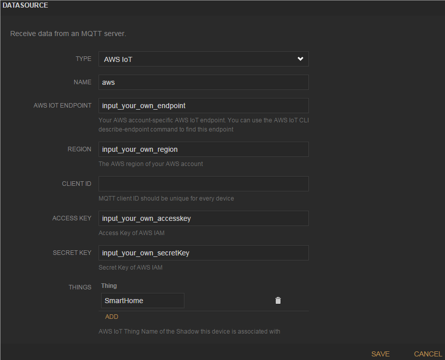
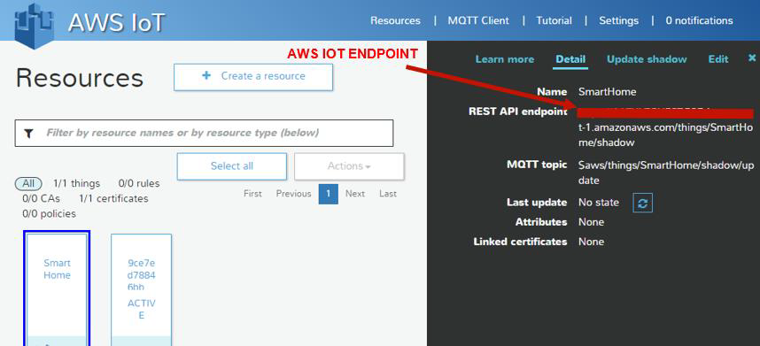
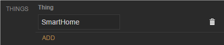
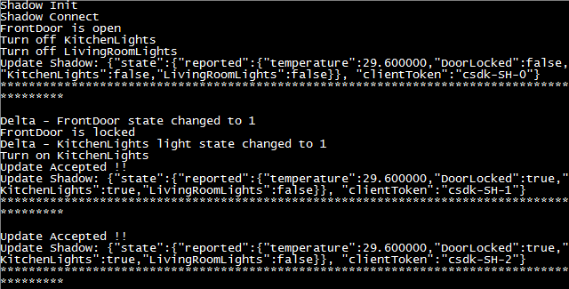

AWS IoT Smarthome¶
Purpose¶
- Show the smart home solution based on ARC and AWS IoT Cloud
- Learn how to use the AWS IoT Cloud
- Learn how to use the EMSK Board peripheral modules and on-board resources
Equipment¶
Required Hardware¶
- [DesignWare ARC EM Starter Kit (EMSK)]
- [Digilent PMOD WiFi (MRF24WG0MA)]
- [Digilent PMOD TMP2]
- SD Card
- WiFi Hotspot (default SSID: embARC, Password: qazwsxedc, WPA/WPA2 encrypted)
Required Software¶
- MetaWare or ARC GNU Toolchain
- Serial port terminal (e.g. Putty, Tera-term or Minicom)
Hardware Connection (EMSK Board)¶
- Connect PMOD WiFi to J5, connect PMOD TMP2 to J2.
- Configure your hardware with proper core configuration.
- The hardware resources are described at the table below.
| Hardware Resources | Represent |
|---|---|
| BUTTON R | Livingroom Lights Control |
| LED 0-1 | Livingroom Lights Status (On or Off) |
| BUTTON L | Kitchen Lights Control |
| LED 2-3 | Kitchen Lights Status (On or Off) |
| BUTTON X | Front Door Lock Control |
| LED 4-5 | Front Door Lock Status (On or Off) |
| LED 7 | WiFi Connection Status (On for connected, Off for not) |
| LED X | Node Working Status (toggling in 2s period if working well) |
| PMOD TMP2 | Temperature Sensor |
| PMOD WiFi | Provide WiFi Connection |
Content¶
This lab provides instructions on how to establish connection between the EMSK and Amazon Web Services Internet of Things (AWS IoT) cloud with a simulated smart home application. With the help of AWS IoT as a cloud platform, devices can securely interact with cloud applications and other devices. AWS IoT also supports MQ Telemetry Transport (MQTT) and provides authentication and end-to-end encryption.

This application is designed to show how to connect only 1 EMSK and AWS IoT Cloud using embARC. The connection between EMSK and AWS IoT Cloud is secured by TLS.
Principles¶
This lab demonstrates the smart home solution based on EMSK by establishing the connection between EMSK Board and AWS IoT Cloud. The AWS IoT Device C SDK for the embedded platform has been optimized and ported for embARC.
In this lab application, the peripheral modules and on-board resources of EMSK board are used to simulate the objects which are controlled and monitored in smart home scenario. The AWS IoT Cloud is used as the cloud host and a controlling platform that communicates with the EMSK Board with MQTT protocol. A HTML5 Web APP is designed to provide a dash board in order to monitor and control smart home nodes.
Steps¶
Creating and setting smart home node¶
Create an AWS account at [Amazon AWS Website]. Amazon offers various account levels, including a free tier for AWS IoT.
Login AWS console and choose AWS IoT.

Choose an appropriate IoT server in the top right corner of the AWS IoT console page. As an example we choose US East (N. Virginia) server, you may choose other server as you see fit.

Create your smart home node in the thing registry and generate X.509 certificate for the node. Create an AWS IoT policy. Then attach your smart home node and policy to the X.509 certificate.
Note
for more details, see [Using a Smart Home Iot Application with EMSK]
Download the root CA certificate from [here]. Rename it rootCA.crt. Copy the certificate files cert.crt, privateKey.pem and rootCA.crt to folder cert/smarthome. Insert the SD card to your PC, and copy the certificate folder cert to the SD Card root.

Open the [Web App] in a web browser and load the configuration file dashboard-smarthomesinglething.json obtained from [embARC/example/freertos/iot/aws/smarthome_demo]. The dashboard can be loaded automatically

Click “ADD” to go to DATASOURCE page and fill the forms.
TYPE: Choose AWS IoT.
NAME: Name is aws.
AWS IOT ENDPOINT: Go to AWS IoT console and click your smart home node “SmartHome”. Copy the content
XXXXXXXXXXXXXX.iot.us-east-1.amazonaws.comin REST API endpoint to AWS IOT ENDPOINT.REGION: Copy the AWS region of your smart home node in REST API endpoint to REGION. For example,
https://XXXXXXXXXXXXXX.iot.us-east1.amazonaws.com/things/SmartHome/shadow. REGION is us-east-1.CLIENT ID: Leave it blank as default.
ACCESS KEY and SECRET KEY: Go to AWS Services page and click “IAM”.

Go to User page and click “Create New Users”. Enter User Names “AWSIoTUser”. Then download user security credentials, Access Key ID and Secret Access Key. Copy Access Key ID to ACCESS KEY and Secret Access Key to SECRET KEY.

Go to user page and click “AWSIoTUser”. Click “Attach Policy” to attach “AWSIoTDataAccess” to “AWSIoTUser”.
THINGS: AWS IoT thing name “SmartHome”.
Click Save to finish the setting.
Building and Running AWS IoT Smart Home Example¶
- The AWS IoT thing SDK for C has been ported to embARC. Check the above steps in
order for your IoT application to work smoothly. Go to embARC/example/freertos/iot/aws/smarthome_demo.
Modify aws_iot_config.h to match your AWS IoT configuration. The macro AWS_IOT_MQTT_HOST can be copied
from the REST API endpoint in AWS IoT console. For example,
https://XXXXXXXXXXXXXX.iot.us-east-1.amazonaws.com/things/SmartHome/shadow. AWS_IOT_MQTT_HOST should beXXXXXXXXXXXXXX.iot.us-east-1.amazonaws.com.

Use USB cable to connect the EMSK board. Set the baud rate of the terminal emulator to 115200.
Insert the SD Card into the EMSK board SD Card slot. Run the AWS IoT application using JTAG. Go to embARC/example/freertos/iot/aws/smarthome_demo in command-line, run the following command:
make TOOLCHAIN=gnu BD_VER=22 CUR_CORE=arcem7d runFreeRTOS-based runtime environment can be loaded automatically. Wait for WiFi initialization and connection establishment (30 seconds or less) until the “WiFi connected” message is shown in the terminal emulator. “Network is ok” is shown after the certificate files cert.crt, privateKey.pem, and rootCA.crt are validated. The information in “reported”: {} is the state of the EMSK-based smart home node. “Updated Accepted !!” means the connection works between the smart home node and AWS IoT cloud.

- Try out functions of EMSK and Dashboard. You can press the button L/R/X to see LED toggling on board, and the status of LEDs also changes on dashboard web app. You can also click the lights of DESIRED STATUS pane on the dashboard app, and check the reactions of LEDs status on board and dashboard web app.